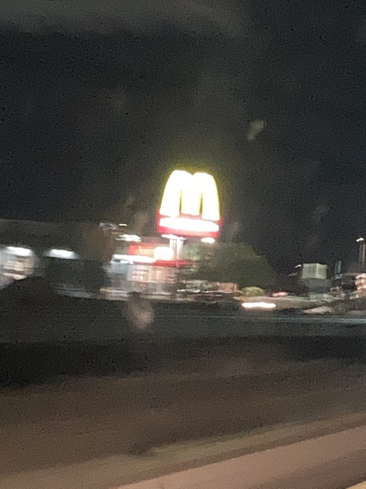
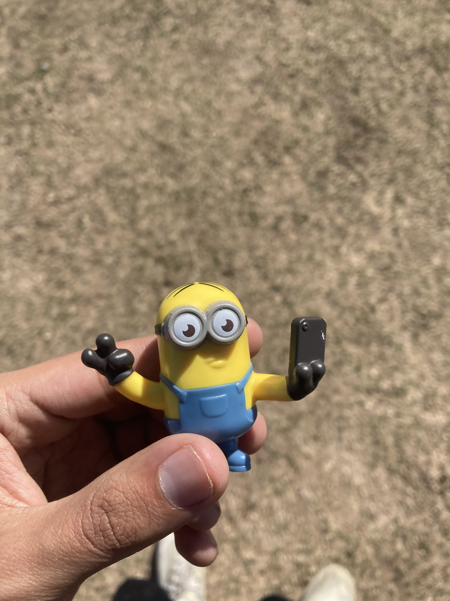

Alexis Herrera
About me
My name is Alexis Herrera and I am a researcher living in Tucson, Arizona. I recently completed my master's degree at the University of Michigan in information and media studies. My interests lie in critical race studies, media theory, science studies, and, increasingly, psychoanalysis. This upcoming fall, I will begin my PhD in the Graduate Program in Literature at Duke University.
While at Michigan, I worked as a research assistant at the Anthropology of Technology Lab and was a 2021 curatorial intern at the University of Michigan Museum of Art. From 2021 to 2023, I was an Association of Research Libraries Kaleidoscope Scholar, and, in the summer of 2021, I worked with Borderlands Theater to collect oral history interviews for their ongoing Barrio Stories project. Before all that, I worked as a software engineer at Medium developing web infrastructures.
I graduated from the University of Pennsylvania in 2019 with a BA in sociology. For a CV, please email me at alexis.herrera@duke.edu.
Pic
 Me at the aquarium in San Francisco. 2021.
Me at the aquarium in San Francisco. 2021.
alexis.herrera@duke.edu
Contingent Perimeters
 Ground Scanning Radar, David
Taylor. 2007.
Ground Scanning Radar, David
Taylor. 2007.
Contingent Perimeters is a digital exhibition I curated at the University of Michigan of Art.
This exhibition brings together six artists—Yaritza Flores Bustos, Gloria Martinez-Granados, Hillary Mushkin, M. Jenea Sanchez, David Taylor, and Alex Turner—who explore the flexible yet stratifying character of the contemporary U.S.-Mexico Border. Collectively, they ask how borders, under neoliberal (digital/bio/necro-)capitalism, function as apparatuses.
Barrio Stories
 Cactus, West Side of Tucson, AZ. 2021.
Cactus, West Side of Tucson, AZ. 2021.
In the summer of 2021, I worked alongside Marc Pinate at Borderlands Theater to collect oral histories for their ongoing Barrio Stories project. This project aims to recuperate and preserve the histories of Mexican-American barrios in Southern Arizona. I specifically worked on collecting and preserving the histories of the west side of Tucson (Menlo Park and Barrio Hollywood).
m1

McDonald's. South Tucson, AZ. 2021.
mmmmmm2

Selfie. 2021.